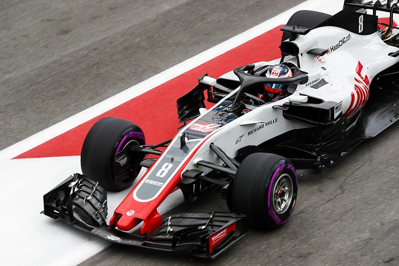

Pietro Fittipaldi é o novo brasileiro a entrar na Formula 1 pela equipe Haas F1 Team como piloto de testes. Usando o Haas VF-18 pela primeira vez no primeiro dia de testes oficiais da Pirelli em Abu Dhabi e registrando incriveis 55 voltas e a melhor passagem de 1min39seg201 em seu primeiro contato com um carro da categoria principal.
Apesar de novo, Pietro ja foi considerado o melhor estreante na Nascar Whelen All American Series, Fittipaldi se mudou para a Europa em 2013, quando entrou para os monopostos na F4 Inglesa. Ele também disputou o campeonato de Fórmula Renault e dominou a temporada 2014 do campeonato de protótipos da Fórmula Renault, conquistando o título com 10 vitórias em 15 corridas.

Em 2016, Pietro Fittipaldi entrou para a Fórmula 3 Europeia, onde conquistou três pódios. Nesse período, ele também disputou o MRF Challenge de Fórmula 2000, sendo campeão com quatro vitórias e nove pódios na temporada. Outro título importante de Pietro aconteceu em 2017 na World Series: foram seis vitórias, 10 pódios e um recorde de 10 poles na temporada.
1 ano fora da Formula 1, o Brasil tem como esperança essa nova geração com Sergio Sette Camara e Pietro Fittipaldi para poder sonhar em voltar a um pódio.